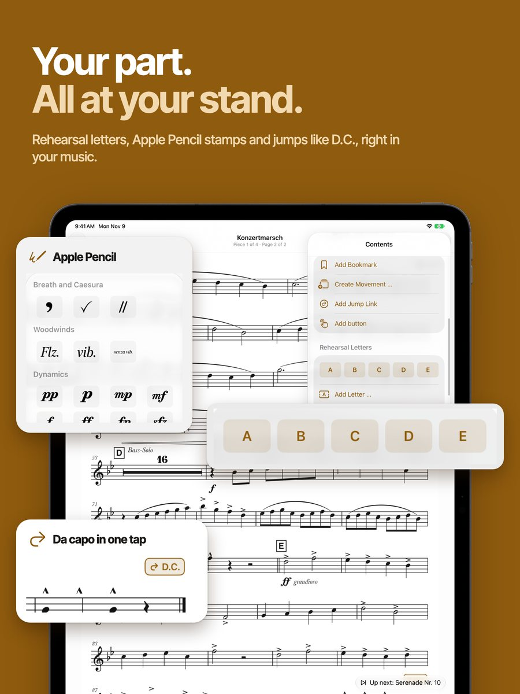
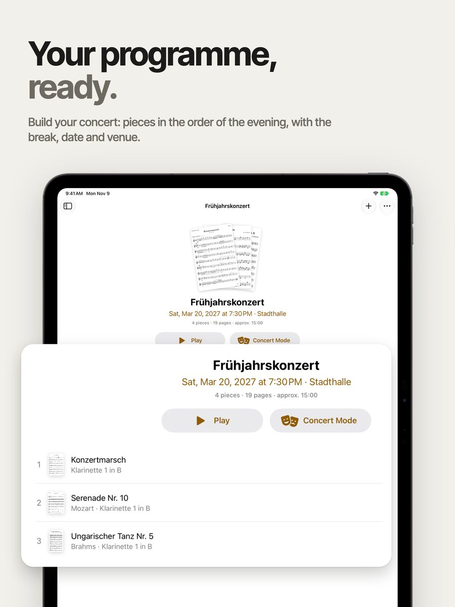
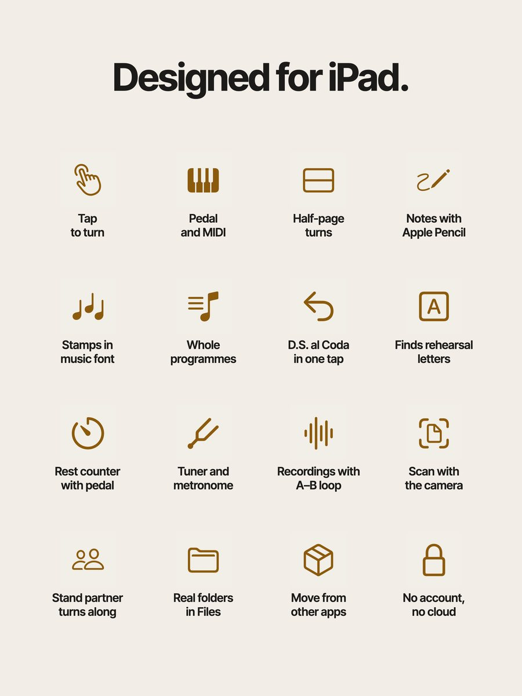
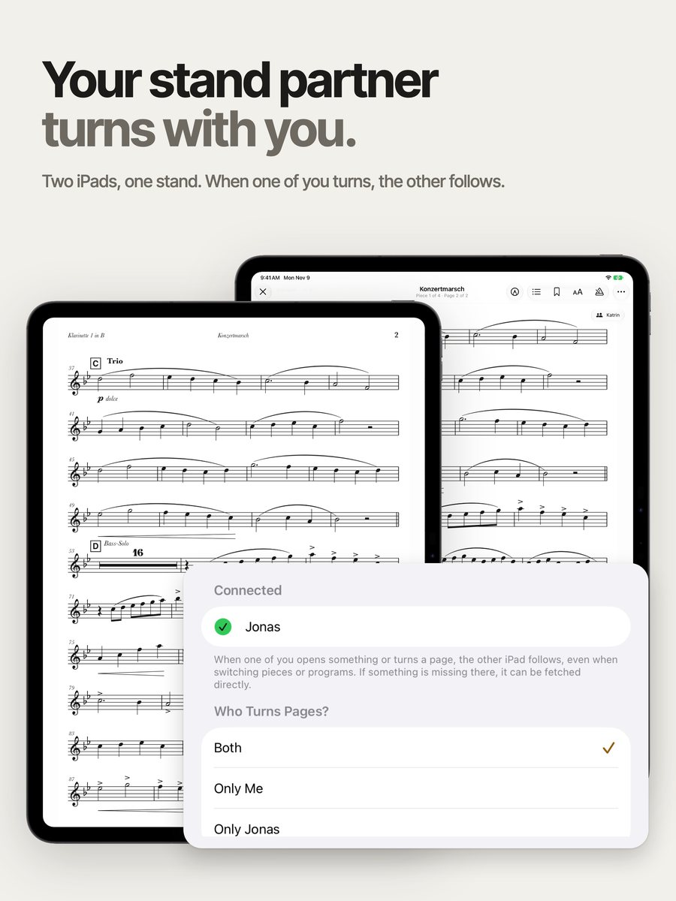
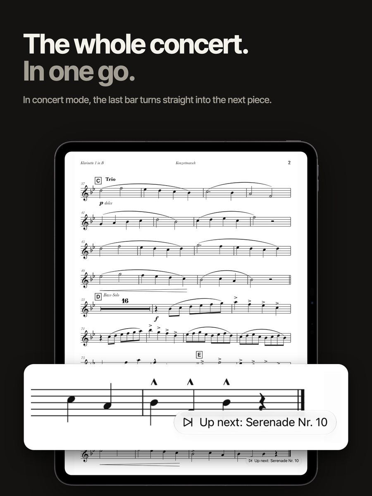

The sheet music app for orchestra on iPad: one tap turns the page, Apple Pencil writes instantly, and the whole concert plays straight through.
Built by a woodwind player for his own stand.





Tap right to go forward, left to go back, or press a Bluetooth pedal. With half-page turns you see the next page at the top while you still play the bottom. MIDI, game controllers and Apple Watch turn pages too.
Apple Pencil writes instantly, your finger keeps turning. Your PDF stays untouched, your markings sit in layers on top. Stamps in real music notation come in 7 groups, from woodwinds to conducting.
Build a programme, and Lupo turns from the last bar straight into the next piece. Your stand partner turns along on their iPad, in groups of up to 8 iPads, without internet.
Get Lupo from the App Store, no account and no sign-in.
Drag PDFs in from the Files app or scan pages with the camera.
Open your part and tap to turn. Assign a pedal with a single press.
Free. Add up to 3 pieces, view them and turn their pages.
Everything else, including notes with Apple Pencil, in a single purchase. No subscription, no add-ons, with Family Sharing.
Try it with three pieces for free. Lupo brings over PDFs, details, bookmarks and programmes from another sheet music app's backup.
Nobody but you. Lupo has no account, no server, no cloud and no analytics. Your music stays as regular PDFs in real folders, visible in the Files app.
Bluetooth pedals that act like a keyboard work, and so do MIDI pedals. Press the pedal once in Settings, and Lupo remembers the key.
An iPad with iPadOS 18 or later. You don't need Apple Pencil to read and turn pages, only for markings.
In concert mode a resting hand doesn't turn the page, and swiping and zooming are off. Lupo never changes your original PDFs, and deleted music stays in the trash for 30 days.
Free with 3 pieces, no account.